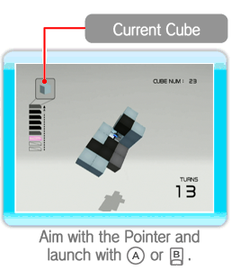
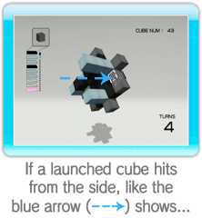
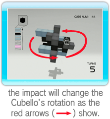
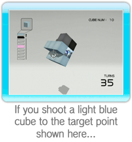
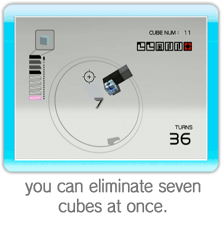
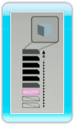
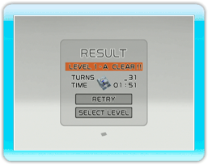

Launch the cubes in your magazine at the Cubello.
Once you eliminate all of the cubes except the core, you clear the stage.
Eliminate cubes by connecting four or more similarly colored cubes with the cube you launch.
Depending on the number of turns you take on a stage, more cubes may be added to the Cubello.
● How to Launch Cubes

Point at where you want to launch the cube and press either

or

to launch your current cube.
The Cubello’s rotation will change based on the angle at which the cube strikes it.
|  |
 |
 |
● Tip for Eliminating Cubes
By connecting similarly colored cubes, you can eliminate many cubes at once.
|  |
|
 |
● About the Magazine

You can launch cubes until the magazine is empty—the cubes in stock will decrease by one each time you launch.
Eliminate cubes in the Cubello and the cubes in stock will increase by three, up to a maximum of ten.
If the Cubello gets close enough to the screen to hit it, you will lose three cubes from your stock.
Please be careful.
● Game Over
If you lose all of the cubes in stock before eliminating all of the cubes in the Cubello, the game ends.
● End Menu

Once you clear or fail the stage, the following menu will be displayed with your results.
|
Retry
|
Retry the stage.
|
|
Select Level
|
Go back to the level-selection screen.
|
*If you clear a LEVEL A for the first time, NEXT LEVEL will also appear.
*For ENDLESS mode, EXIT will appear instead of SELECT LEVEL.